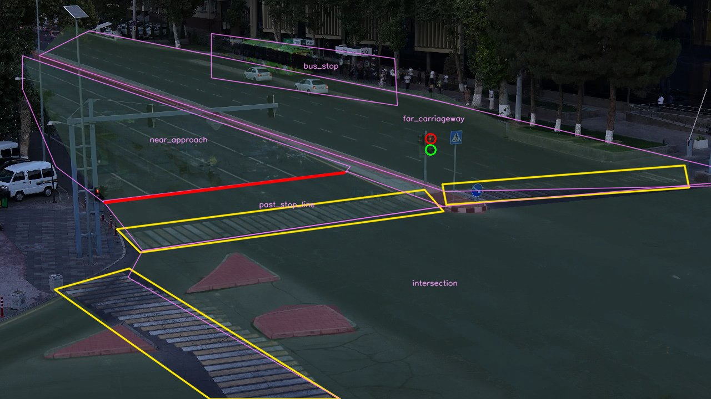
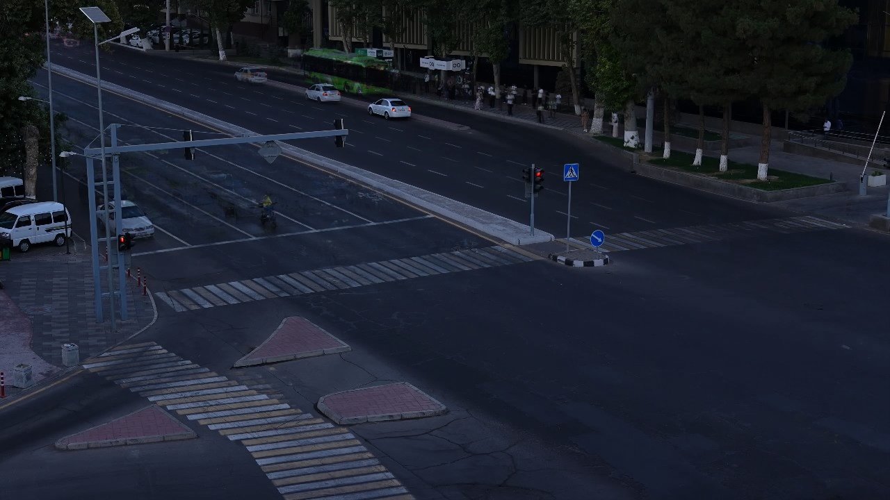
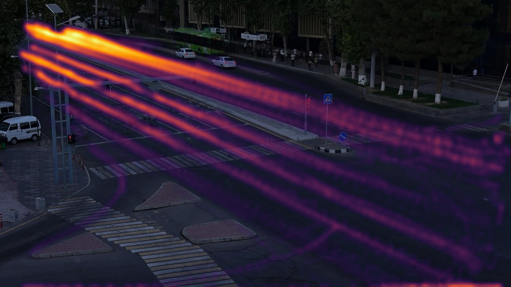
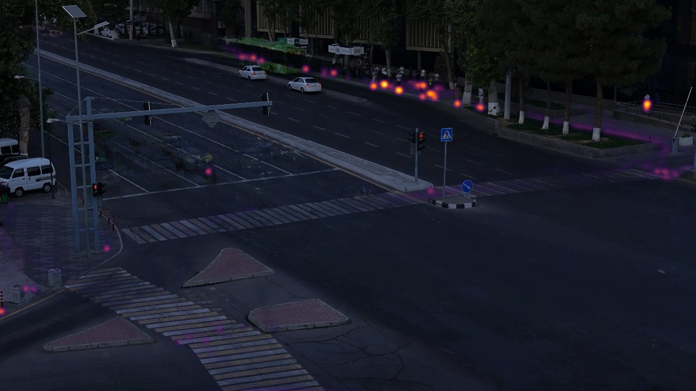
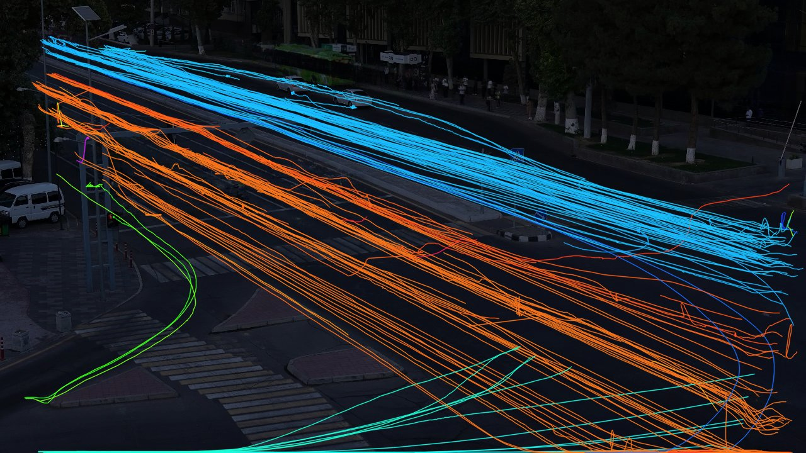
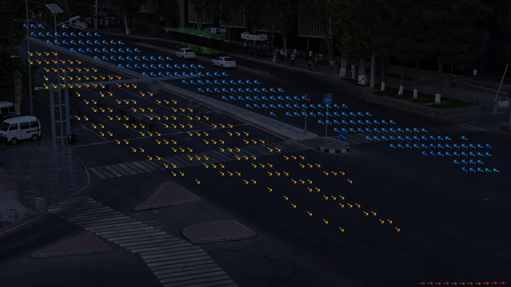

WIUT Hackathon 2026 · Computer Vision track · elimination task
Traffic events and accident risk from one fixed road camera
We watch a CCTV view of a signalised junction in Tashkent, report every traffic event as a time segment with a class, and raise a risk score before a collision could happen. The system combines an open-weights detector and tracker with geometry and signal state that we read from the image itself.
Problem and approach
Two outputs per video: Part A a list of [start, end, class] segments scored by temporal-IoU F1,
and Part B a causal per-frame probability that an accident starts within 5 s. There are no labels, so every
decision had to come from the footage: we built the pipeline around what the camera shows reliably.
Learned
- YOLO11s (COCO, open weights, AGPL-3.0) — people, bicycles, cars, motorcycles, buses, trucks at 1280 px, 7.5 fps.
- ByteTrack association (Ultralytics implementation).
- Road flow field — dominant travel direction per 20×20 px cell, learned from the tracks of the four sample clips (used for wrong-way).
- Signal normalisation — per-clip scaling of lamp colour scores (dusk vs. glare).
Rule-based
- View registration — SIFT + RANSAC homography to one canonical frame; the camera framing shifts ~3 % between clips.
- Scene layout — three crossings, the stop line, carriageway, refuge islands, approach and junction zones (drawn once).
- Signal phase — read from the pixels of the vehicle signal on the median tip.
- Event rules for 7 classes and a time-to-collision risk model (below).
Class rules
Classes we do not predict (accident, near_miss, illegal turns, solid-line crossing, obstacles, fire) are left out on purpose: the metric adds every predicted class to the average, so a class we cannot recognise reliably would only lower the score. Part B still anticipates accidents from time-to-collision.
EDA of the sample videos






Traffic over time
Signal cycle
Findings that shaped the solution
Results on the sample videos
Operator view
What a city traffic centre would read off the same tracks: events per clip, how many pedestrians cross against the signal, and throughput of the boulevard approach.
Examples per class
Dev-set evaluation
Ablations
Failure cases
Live demo
Upload an .mp4 from this camera (up to 2.5 minutes and 500 MB; longer files are cut). Everything runs in your browser with ONNX Runtime Web — the video never leaves your device. The demo uses the same layout and rules as the submission, with a lighter detector (YOLO11n at 640 px, 5 fps) so it finishes in a few minutes on a laptop.